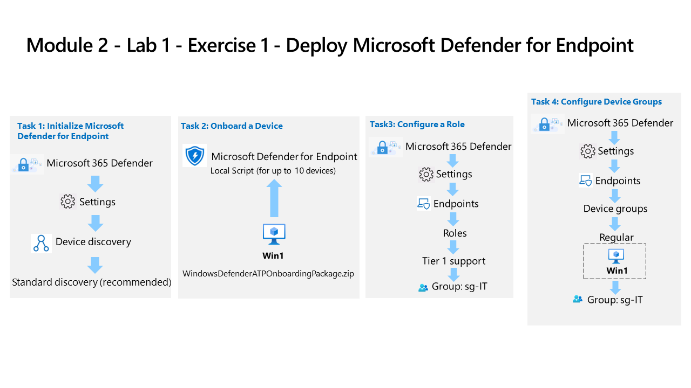
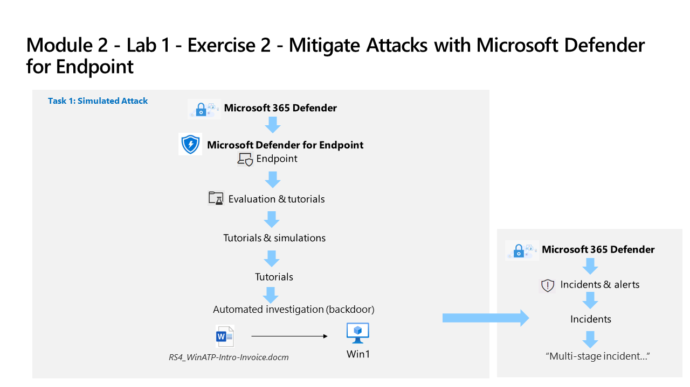

Deployed and configured Microsoft Defender for Endpoint, onboarded a Windows device, configured roles and device groups, then ran a simulated backdoor attack and investigated the resulting multi-stage incident. Supplemented with Microsoft Learn exercises covering endpoint hardening, Defender for Cloud, and Entra ID Protection policies.

Lab architecture diagram — Source: MicrosoftLearning/SC-200T00A-Microsoft-Security-Operations-Analyst, MIT License
Tasks Completed
Initialized Microsoft Defender for Endpoint and configured standard device discovery
Onboarded a Windows device (Win1) using a local onboarding script package
Configured a Tier 1 support role and assigned the sg-IT security group
Created a Regular device group scoped to Win1 and assigned to sg-IT
Ran a simulated automated investigation attack (RS4_WinATP-Intro-Invoice.docx backdoor) against the onboarded device

Lab architecture diagram — Source: MicrosoftLearning/SC-200T00A-Microsoft-Security-Operations-Analyst, MIT License
Reviewed the resulting multi-stage incident in Microsoft Defender XDR (Incidents & alerts)
Hardened endpoints using Intune and Defender for Endpoint security baselines (Microsoft Learn exercise)
Explored the Defender for Cloud interactive guide and reviewed security recommendations (Microsoft Learn exercise)
Enabled the sign-in risk policy in Microsoft Entra ID Protection to require MFA on medium/high risk sign-ins
Configured the MFA registration policy in Entra ID Protection to enforce combined registration for the pilot group
Environment: Employer-provided Azure subscription (resources deleted after lab) and Microsoft 365 E5 test tenant.